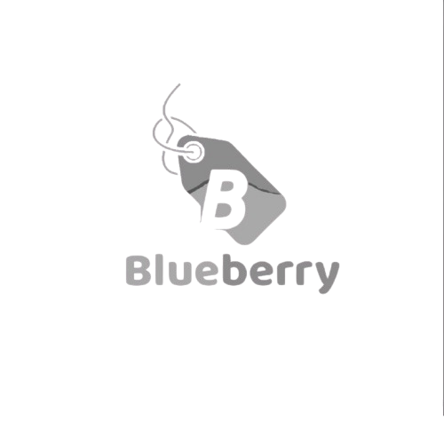

Videos Edited
Views Generated
Brands Worked With
Monthly Reach

"SHANIB’s editing transformed our content entirely. The pacing is perfect, and our engagement skyrocketed."
"Absolutely cinematic. Our brand feels premium and untouchable now thanks to these video edits."
"Highly professional. Delivered exact vision with incredible attention to detail. Fast turnaround."
"The level of thought put into every cut is extraordinary. It feels intentional, never rushed."
"I wanted high-end and luxurious, and that’s exactly what I got. Brilliant work and a true partner."
"Retention was our biggest issue. After working with SHANIB, our watch time doubled."
"Visually stunning quality. You won't find a better eye for modern, cinematic pacing."
"An absolute game-changer. Elevates our ordinary footage into a cinematic masterpiece."
Let’s create content that commands attention.